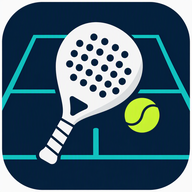

Estás sin conexión
Podés revisar la información que ya fue cargada. Para consultar horarios, crear reservas o actualizar estados necesitás conexión.

Podés revisar la información que ya fue cargada. Para consultar horarios, crear reservas o actualizar estados necesitás conexión.